The terminal on the wall: staff scan a finger to check in or out. It shows the employee's name and the time, and stores every punch in its own memory (about 40,000 punches). It keeps working with the PC switched off.
The admin app on the Windows PC: it copies the punches from the terminal (every 20 seconds while it is open), and is where you manage employees, shifts, the monthly timesheet and salaries.
The PC is the permanent record. After a punch is safely saved on the PC, the terminal is free to reuse that space. Employee names, shifts, wages and reports exist only on the PC.
You do not need to keep the app open all day. The terminal stores punches until the app next connects, then the app catches up on its own.
2. Installing and first start
Installing
Copy the whole Release folder to the PC (for example to C:\Attendance) and start attendance_admin.exe. Create a desktop shortcut to it for daily use. Always copy the whole folder, not only the .exe file.
Connecting to the terminal
On first start the app searches the network for the terminal by itself. When it finds it, it asks for the device token, a 32-character code that protects the terminal. The token is printed in the terminal's start-up log, on the line that begins api: listening.
If the search does not find the terminal, click Enter the address manually and type the IP address shown at the top of the terminal's screen, then the token, then Connect.
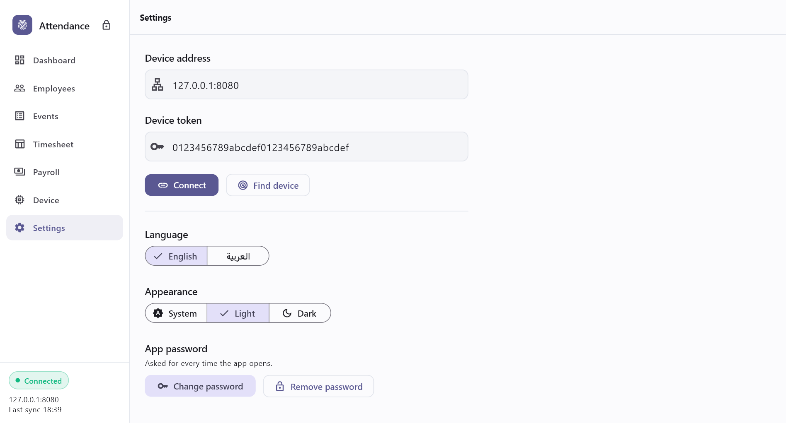
Settings: the terminal's address and token, with the app password below.
The address and token are saved. From then on the app opens straight into the main window. If the terminal later gets a different address from the router, the app finds it again automatically.
3. The app password
To stop other people at the computer opening the app, set a password in Settings → App password → Set password (at least 4 characters, typed twice). From then on the app asks for it every time it opens.
The App password section in Settings.
Lock now: the padlock next to "Attendance" at the top of the sidebar locks the app immediately, for example when you leave the desk.
Change or remove: Settings → Change password or Remove password. Both ask for the current password first.
While the app is locked, punches are still copied from the terminal in the background.
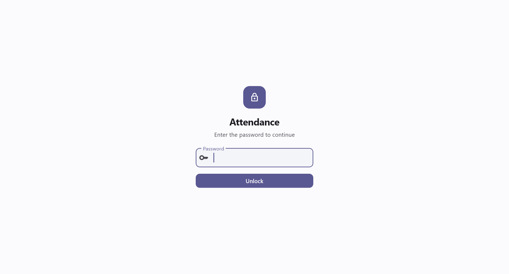
The lock screen.
Forgotten password: close the app, open the file %APPDATA%\com.store\attendance_admin\shared_preferences.json in Notepad, delete only the line containing flutter.app_password, save, and start the app. Do not delete anything else in that file: it holds the terminal's address and token.
4. The main window
The sidebar on the left opens each page: Dashboard, Employees, Events, Timesheet, Payroll, Device and Settings. Its bottom corner shows the connection:
Shows
Meaning
Connected
Everything is fine. "Last sync" is the time punches were last copied.
Syncing
Copying punches right now.
Looking for the device…
The terminal moved to a new address; the app is finding it.
Not connected
The terminal cannot be reached (off, cable, network). Use the retry button. Punches are safe on the terminal meanwhile.
Wrong token
The terminal rejected the token. Open Settings and enter it again.
5. Dashboard
The first page gives a live view: how many staff are at work right now, how many punches the terminal holds, how many are still waiting to be copied, the terminal's free memory, and the latest punches with names and times.
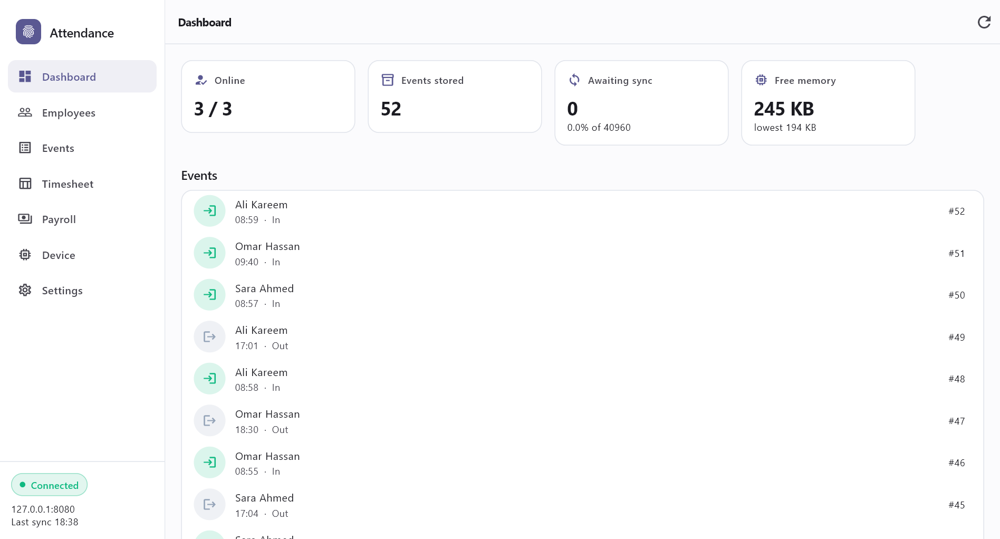
Dashboard: all three staff at work, every punch copied to the PC.
6. Employees and fingerprints
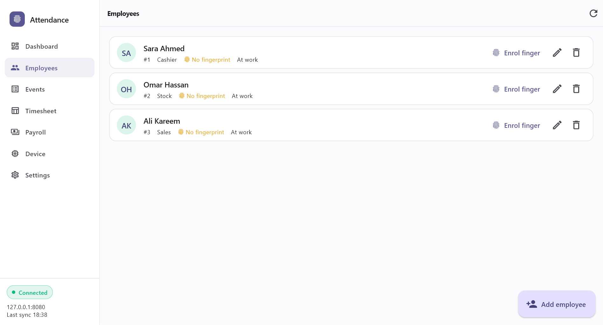
The employee list.
Adding an employee
Click Add employee (bottom right).
The Employee ID is filled in for you (1 to 65535). It cannot be changed later.
Type the name (Arabic or English) and, if you like, a job title. Click Add.
The name is shown on the terminal's screen when the person scans. The terminal must be reachable to add someone.
Enrolling fingers
Click Enrol finger on the employee's row.
Follow the steps on screen and on the terminal: Place finger on the sensor → Lift your finger → Place the same finger again.
"Enrolled successfully" means the finger is saved. If it says it failed, simply try again.
Enrol two or three fingers per person (for example both index fingers). Wet, dry or cut fingers fail sometimes; a second finger avoids a missed punch. The sensor holds about 240 fingers in total.
Editing, removing and restoring
Edit (pencil): change the name or job title. The terminal's display is updated.
Delete (bin): removes the person and their fingerprints from the terminal. Their attendance history stays in every past report. They move to Former employees, where Restore puts them back on the terminal (enrol their fingers again).
Not on the terminal with a Send to terminal button means the PC knows the person but the terminal does not (for example after the terminal was cleared). Click it, then enrol their fingers.
A growing failed reads count means a finger is getting hard to read: enrol another finger.
7. Events (punches)
Every check-in and check-out, newest first, grouped by day. Filter by employee or by date at the top.
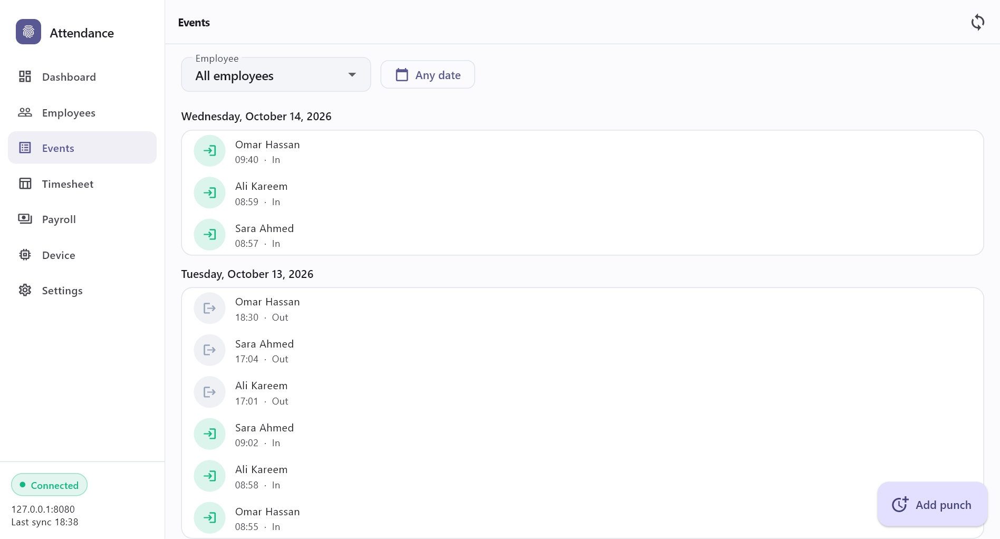
Events, grouped by day.
Adding a punch by hand
When a finger will not read, a manager can enter the punch: Add punch → choose the employee, In or Out, the date and time, and a reason (required). Manual punches are marked in every report and recorded in the audit log.
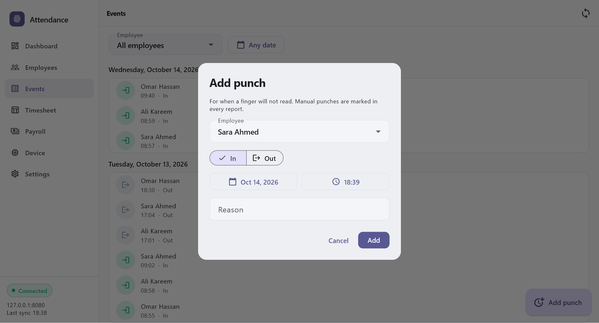
Adding a manual punch. The reason is required.
Correcting a time
Click a punch and choose Correct the time. Enter the right time and a reason. The original recorded time is never deleted: the correction is used in reports, and Remove correction brings the original back. Manual punches entered by mistake can be deleted; scanned punches cannot (they are evidence) but can be corrected.
"Time unverified" means the terminal had lost power and could not yet confirm its clock when the punch was made. Check those times and correct them if they are wrong. The app sets the terminal's clock automatically when it connects.
8. Shifts
Shifts decide what counts as late, absent, overtime and a day off. Open them from Timesheet → sliders icon (Shifts).
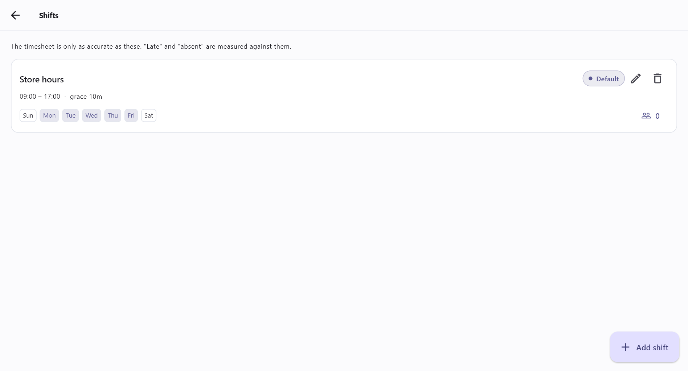
The default "Store hours" shift.
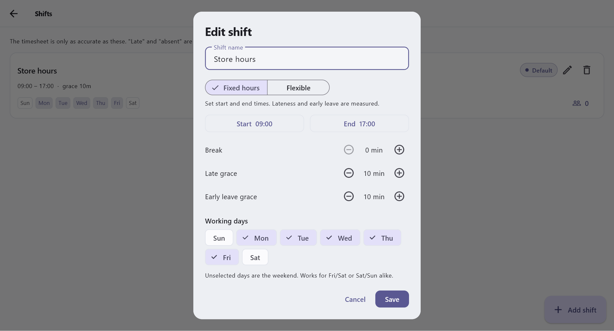
Editing a shift.
Fixed hours: a start and end time (e.g. 09:00–17:00). Lateness and early leave are measured. An end before the start is a night shift that ends the next day.
Flexible: only the hours per day count. Nobody can be late.
Break: unpaid minutes subtracted from the shift length.
Late grace / Early leave grace: arriving within the grace is not late at all. After it, the whole delay counts (arriving 09:25 with 10 min grace = 25 min late).
Working days: unselected days are the weekend (works for Fri/Sat or Sat/Sun).
Default: the shift used for everyone without their own. Exactly one shift is the default.
Assign to (people icon): choose who works this shift. Changes apply from today on; past months are not recalculated.
9. Timesheet
The month's attendance, calculated on the PC from the stored punches. Use the arrows at the top right to change month.
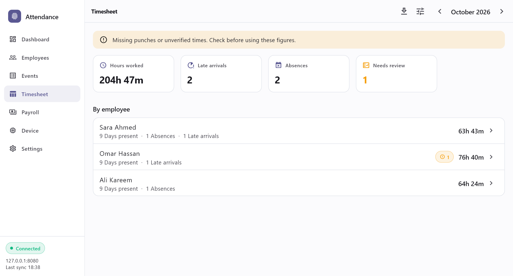
Timesheet summary for October.
Click an employee to see each day:
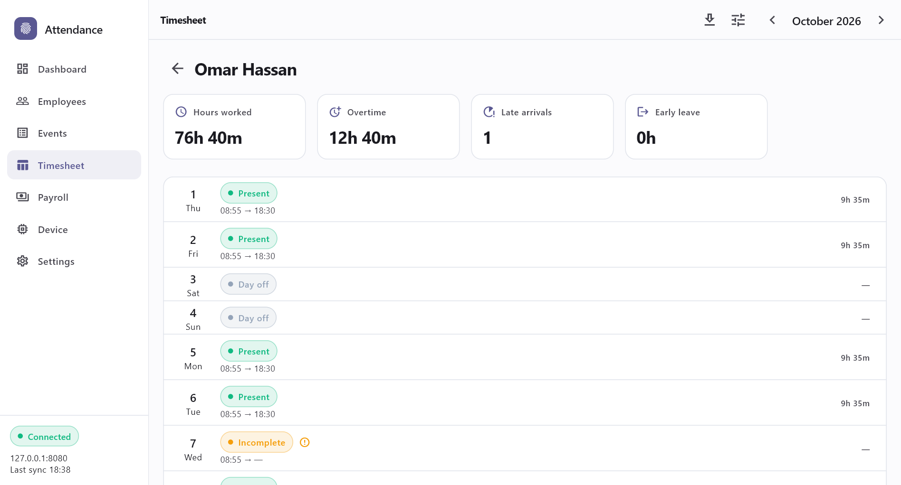
One employee's days. The 7th is "Incomplete": he forgot to check out.
Status
Meaning
Present
Worked a scheduled day.
Absent
Scheduled, no punch at all.
Incomplete
Punches do not pair up, usually a missing check-out. Needs review.
Day off
Not scheduled. Any time worked counts as day-off work.
Upcoming
A scheduled day that has not happened yet.
At work
Today, checked in and not yet out.
The orange warning and the "Needs review" count point at days with missing punches or unverified times. Fix them on the Events page (add the missing punch or correct the time) before using the figures for pay.
Export to Excel (download icon) saves timesheet-YYYY-MM.xlsx in your Documents folder: a summary sheet and a daily detail sheet. When the app is in Arabic, the file is in Arabic and right-to-left. A file with the same name is replaced.
10. Payroll
Salaries for the month, built on the timesheet.
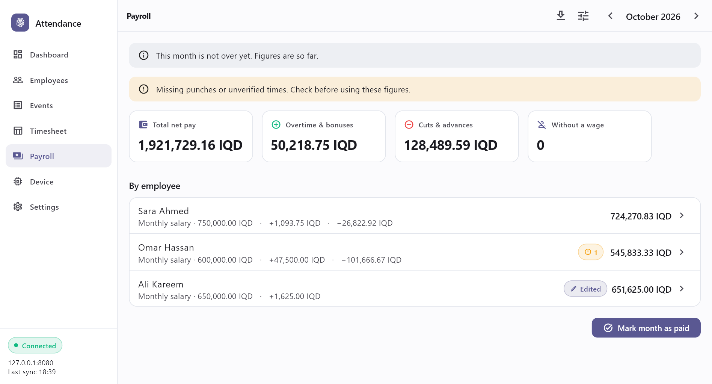
Payroll for October: totals and one row per employee.
How pay is calculated
Day wage = monthly salary ÷ 30 (every month). Hourly rate = day wage ÷ the employee's usual shift hours.
Overtime on a working day is paid at ×1.5 the hourly rate; any work on a day off at ×2.
Late arrival and early leave are cut per minute at ×1 the hourly rate (the shift's grace still applies).
Each absence costs one day wage (never more than the salary). A finished month with no attendance at all pays nothing.
All of these can be changed in Pay rules (sliders icon): the multipliers (0 turns a cut off), whether absences are cut, ignoring short overtime (e.g. under 15 minutes a day), and the currency label (IQD in these examples).
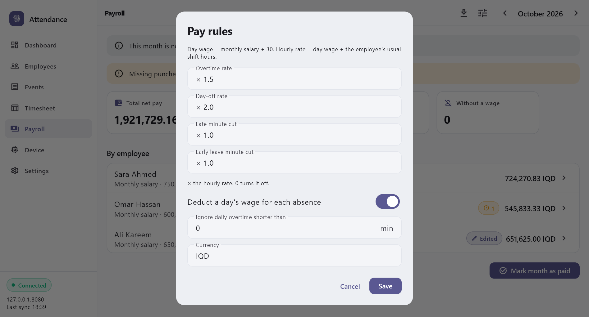
Pay rules.
Setting a wage
Click an employee, then Set wage. Choose Monthly salary, Per day or Per hour and enter the amount. A wage applies from the month shown onward; earlier months keep the wage they had, so a raise never changes past months.
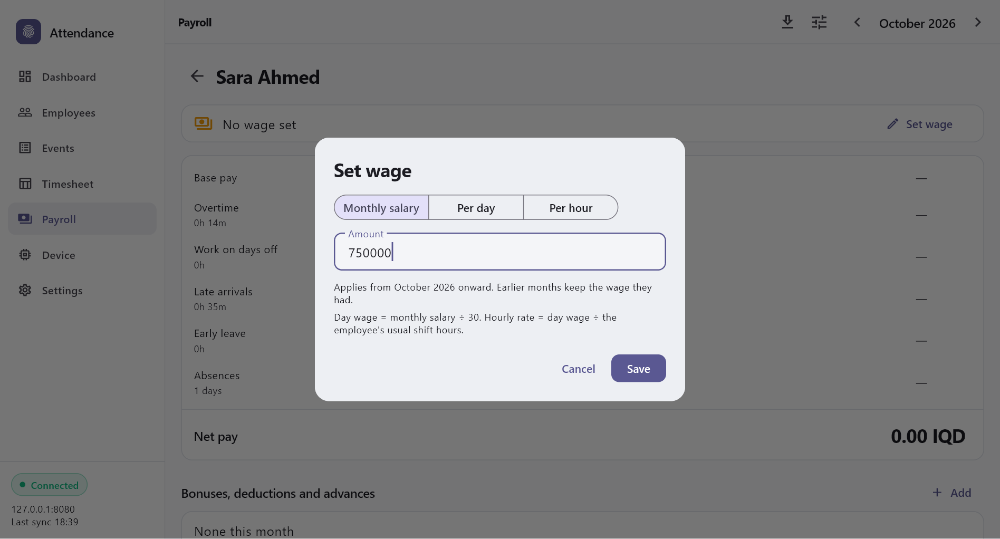
Setting a monthly salary of 750,000 IQD.
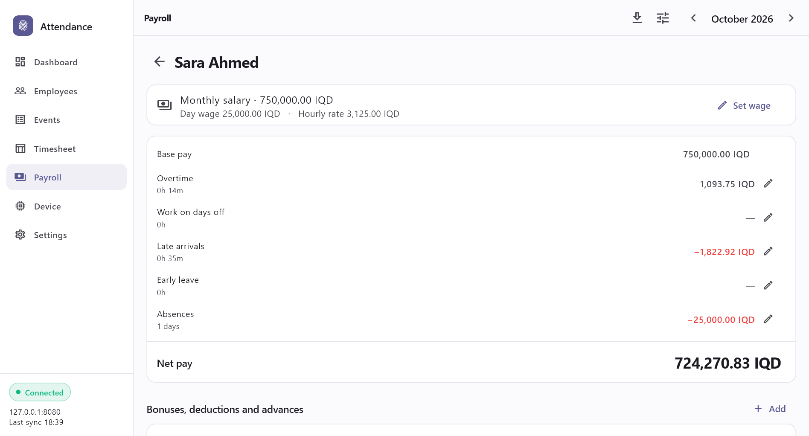
The payslip after saving: a late arrival and an absence are cut.
Per day: paid for each scheduled day attended; absent days are simply unpaid.
Per hour: paid for the minutes worked; lateness and absence are not cut again (that time was already unpaid).
The payslip
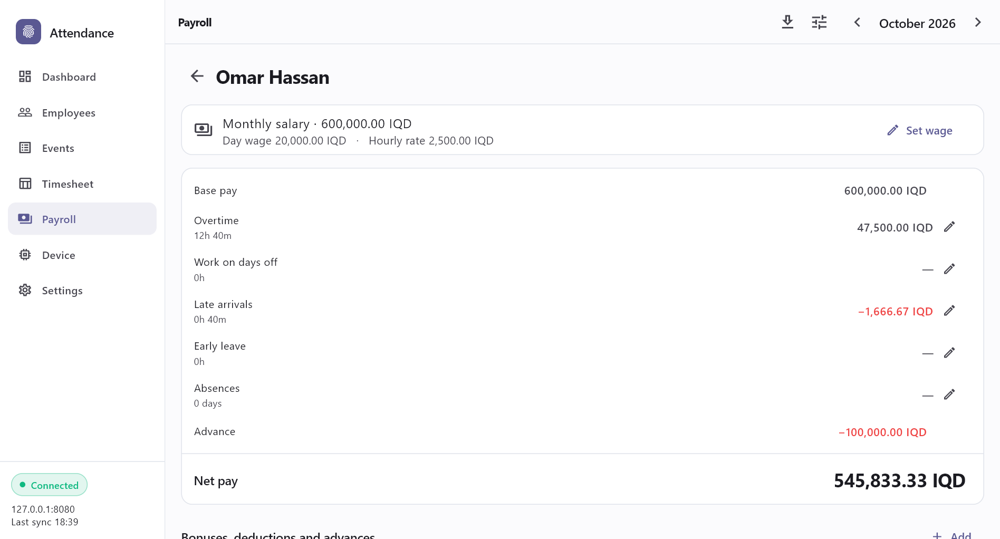
A payslip: base pay, overtime, late cut, an advance, and the net pay.
Changing a figure: click the pencil on Overtime, Work on days off, Late arrivals, Early leave or Absences to replace the clock's figure (for example lower absent days to 0 to excuse sick leave). The line is marked Edited and still shows the clock's original figure. Use clock figure undoes it.
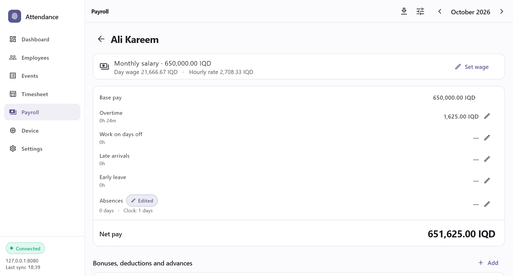
An edited figure: Ali's one absence excused as sick leave (0 days paid, 1 on the clock).
Bonuses, deductions and advances:Add under the payslip, choose the type, amount and a note (required). Remove one with its ✕.
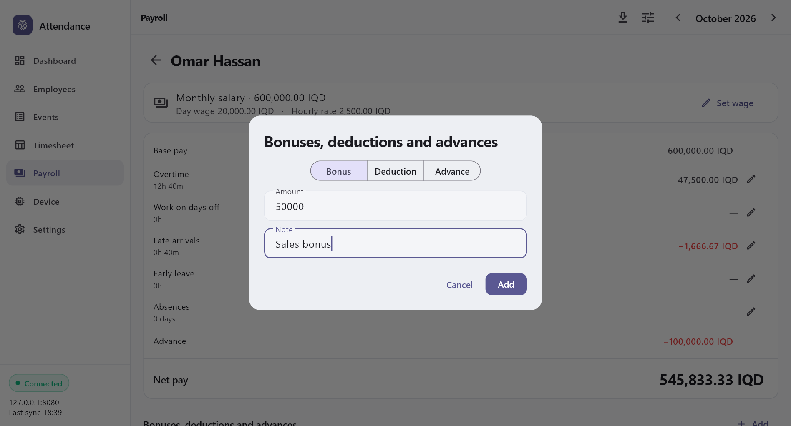
Adding a bonus.
Paying the month
When salaries are handed out, click Mark month as paid. The month's figures are frozen: later corrections, wage or rule changes do not change what was paid. The app warns you if the month is not over, if days need review, or if someone has no wage. Reopen unfreezes a paid month (it is then recalculated from current data).
The download icon exports payroll-YYYY-MM.xlsx to Documents: every payslip line per employee with totals, plus a sheet of bonuses, deductions and advances.
New employees: the app does not know a start date, so days before someone joined count as absences. For their first month, lower their absent days with the pencil.
11. Terminal settings (Device)
Everything here is stored on the terminal. Change what you need, then click Apply.
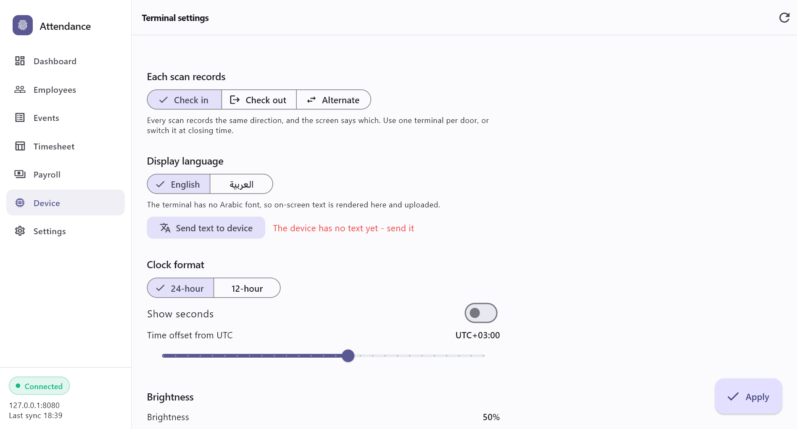
Terminal settings.
Each scan records:Check in or Check out records that direction for everyone, and the screen says which (switch at closing time, or use the touch button on the terminal). Alternate flips each person between in and out.
Display language: English or Arabic on the terminal. After changing it, click Send text to device: the terminal has no Arabic font, so the app draws the text and uploads it.
Clock format (24-hour or 12-hour), Show seconds, Time offset from UTC (the app keeps this in step with the PC automatically).
Brightness, Dim screen after and Blank screen after. Keep dimming on: an always-bright screen burns in over time.
Buzzer, Touch button connected, Sensor wake wire connected (turn these off only if those parts are not wired).
Ignore repeat scans within: a second scan by the same person inside this time is ignored (default 1 minute).
Clear the device: erase the log, the fingerprints, the settings, or everything. You must type CLEAR. Punches are copied to the PC first, so clearing the log loses nothing already synced.
12. Wi-Fi fallback
Device → Wi-Fi fallback. Ethernet stays the main connection. If the cable has no working connection for 20 seconds, the terminal joins this Wi-Fi network instead, and returns to the cable once it has worked again for a minute.
Set it while the app can reach the terminal (normally over the cable).
Click Scan: the terminal lists the networks it can hear, strongest first. Pick yours.
Type the password (empty only for an open network; otherwise at least 8 characters) and click Save.
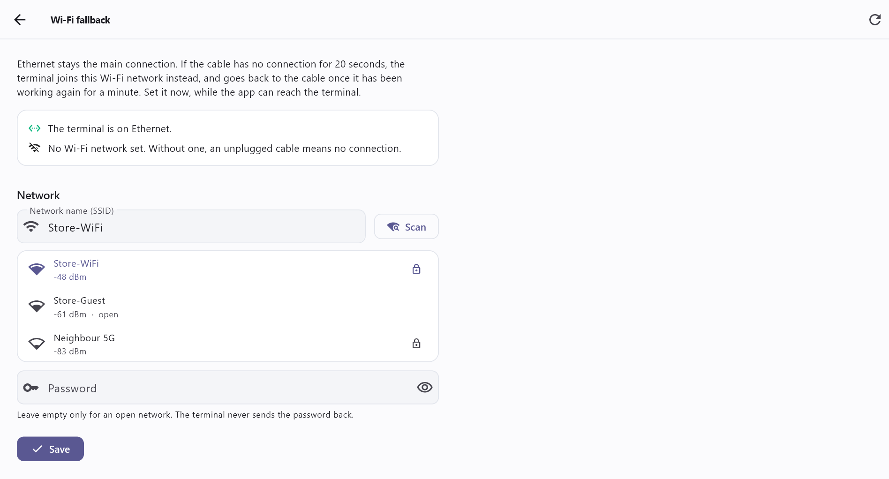
Picking the network from the terminal's scan.
The page shows whether the terminal is on Ethernet or Wi-Fi and the signal strength. Forget network removes it. When the terminal switches, its address changes; the app finds it again by itself if the PC is on the same network.
13. Telegram alerts
Device → Telegram alerts. The terminal sends these itself, so they arrive even with the PC switched off.
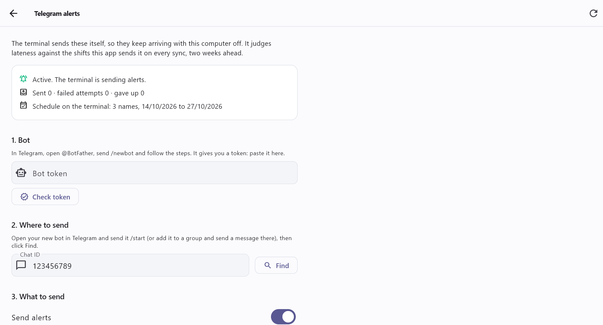
Setting up the bot and chat.
In Telegram, open @BotFather, send /newbot and follow the steps. Copy the token it gives you, paste it into Bot token and click Check token.
Open your new bot in Telegram and send it /start (or add it to a group and write a message there). Click Find and pick the chat.
Choose what to send, switch on Send alerts, click Save, then Send test message.
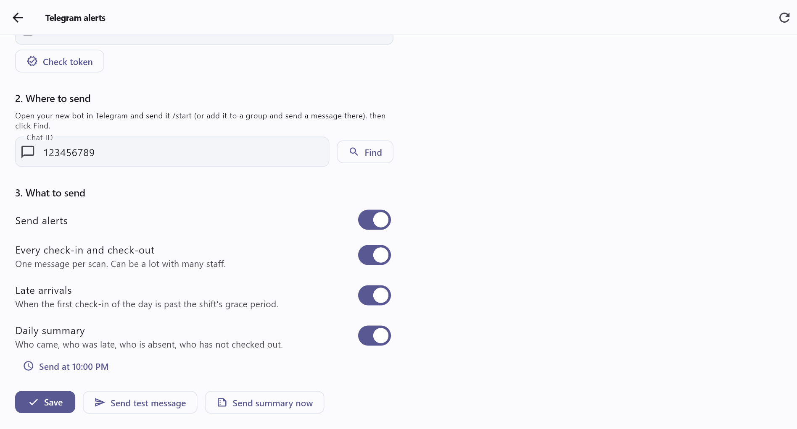
What to send.
Every check-in and check-out: 🟢 Sara — IN 08:57, 🔴 Sara — OUT 17:05.
Late arrivals: 🟠 Omar — IN 09:40 · 40 min late, when the first check-in of the day is past the grace.
Daily summary at the time you choose: present, late, absent, not checked out, and who came on a day off.
Messages use the terminal's display language. The app sends the terminal the names and the next 14 days of shifts on every sync, so late alerts keep working for two weeks with the PC off. The page shows how many messages were sent and the last problem, if any.
14. Settings
Device address / Device token / Connect / Find device: change or re-find the terminal.
Language: English or العربية for the whole app (Arabic is right-to-left).
Appearance: System, Light or Dark.
App password: see section 3.
15. Daily and monthly routine
Every day
Open the app once; check the corner says Connected.
If someone could not scan, add their punch on the Events page with a reason.
At the end of the month
Timesheet: clear every "Needs review" day (add missing check-outs, correct unverified times).
Payroll: check every employee has a wage; excuse absences (sick leave) and add bonuses, deductions and advances.
Export the timesheet and payroll to Excel if you keep paper or accounting copies.
Pay the staff, then click Mark month as paid.
16. Troubleshooting
Problem
What to do
"Not connected"
Check the terminal has power and its network light; look at the IP on its screen. Click retry. Punches stay safe on the terminal.
"Wrong token"
Settings → enter the token from the terminal's start-up log → Connect.
Terminal not found automatically
Settings → type the address shown on the terminal's screen → Connect.
"Not recognised" on the terminal
Try another enrolled finger; enrol more fingers for that person. Add the punch by hand if needed.
A day shows Incomplete
A check-out is missing: add it on the Events page.
"Time unverified"
The terminal lost power. Correct the time on the Events page if it is wrong.
Arabic text shows as boxes on the terminal
Device → Send text to device.
No Telegram messages
Device → Telegram alerts: check "Send alerts" is on, then Send test message and read "Last problem".
Wages look wrong
Check Pay rules and each wage; check the shifts (they decide lateness and overtime).